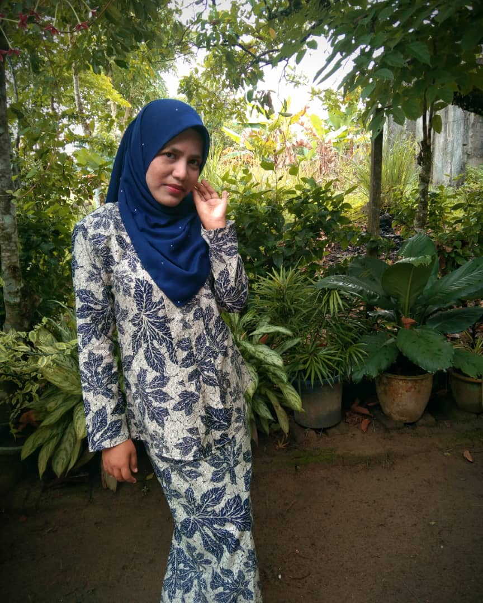

A little bit about me.Hope you enjoy to know my journey!

Assalamualaikum hope everyone who read my personal webpage is in good and always happy even you will read my boring story life. This is me, I am Faten Nazirah binti Ramli. Everyone can call me as Faten or Nazirah or Irah or other. That is my nickname that usually friends, teachers, lecturer and family call me but I don't care what you want to call me as long as that name is good and suitable for me. I am 20 years old. I was born in Tanah Merah at Hospital Tanah Merah (HTM) and my hometown also at Tanah Merah. I am birth at 30 July 2000. I am love to reading book with any type of book that can get me moral value and make me motivated when I am read that book such as book Dari Hati ke Hati by Iddin Ramli. That book is motivation book. Motivation book is good for me as a student because can make me more motivated about everything I do, can improve my knowledge can make me know about something that I never know before and others. Others than reading I like cycling but I hate jogging hehehe. Jogging make me much of tired and I have a history that make me really do not want to jogging anymore after this which is I fainted while jogging.
This is my Idola. They is successfull in their own business which is Ainaa Beauty and I want to become as a young success person like them. They both is husband and wife and people know them as Hafiz Mahamad and Syafiqah Ainaa. I am so proud to both of them because of their success in business and their attitude. They are very good and not arrogant even if they are successfull in the world of business. Many things that amaze me with their attitude. for example they even though they have succeeded but never forget their friends who have not succeded. they provide a comfortable and suitable job for their friends to build mutual success